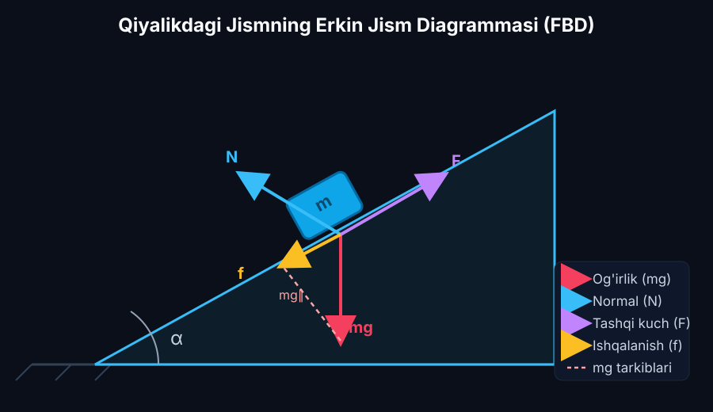
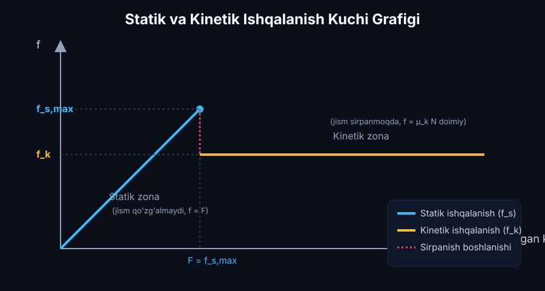
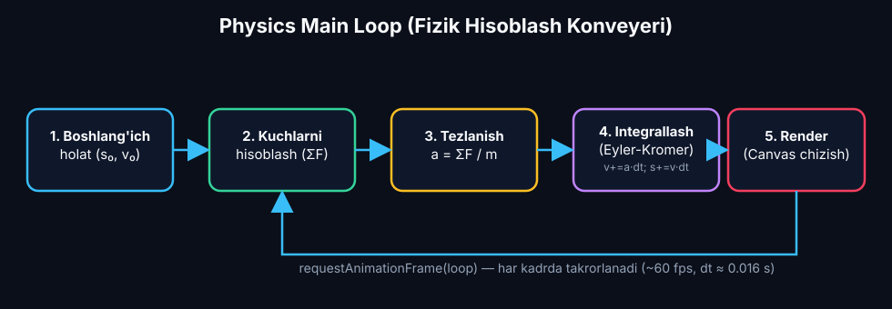

Raqamli texnologiya yordamida fizik modellarni shakllantirish
Erkin jism diagrammasi (Free-Body Diagram — FBD), Claude (Vision) optik dekonstruksiyasi, Nyutonning 2-qonuni vektor proyeksiyalari, Kulon-Amonton va Stribek ishqalanish dinamikasi, algoritmik blok-sxema qurish qoidalari, Sokratik debugging va PhET "Forces and Motion: Basics" simulyatsiyasining teskari muhandislik tahlili.
📋 6-ma’ruza rejasi va AI texnologik konveyeri:
MagicSchool AI: ZPD tamoyili asosida 3 klasterli adaptiv o‘quv trayektoriyasini tuzish.
Claude (Vision): Qo‘lda chizilgan eskizlardan vektorlar va burchaklarni ajratish.
WolframAlpha / ChatGPT: Dekart proyeksiyalari ($Ox, Oy$), statik va kinetik ishqalanish.
Claude: Physics loop, Simplektik Eyler–Kromer integratori va to‘qnashuvlar.
Claude / Gemini: Fizik mantiqni tekshirish (Debugging) va Midjourney ilmiy illyustratsiyalari.
HTML5 Canvas jonli FBD dvigateli va PhET "Forces and Motion: Basics" integratsiyasi.
💡 Pullik vositalarning bepul muqobillari
Bu sahifada tilga olingan ayrim vositalar pullik, limitli yoki O‘zbekistonda cheklangan bo‘lishi mumkin. Topshiriqlarni quyidagi bepul vositalar bilan ham to‘liq bajarish mumkin:
- Midjourney o‘rniga: Microsoft Designer (Bing Image Creator), Gemini yoki ChatGPT bepul tarifidagi tasvir generatsiyasi, Stable Diffusion; aniq ilmiy chizmalar uchun Inkscape, diagrams.net, GeoGebra.
To‘liq ro‘yxat: SI vositalari sahifasi.
MagicSchool AI: kognitiv diagnostika va 3 klasterli adaptiv o‘quv rejasi
Fizik modellashtirish kursi doirasida talabalarning fazoviy tasavvuri, vektorli hisob-kitob ko‘nikmalari va dasturlash tayyorgarligi keskin farq qiladi. MagicSchool AI platformasi Lev Vygotskiyning Eng Yaqin Rivojlanish Zonasi (Zone of Proximal Development — ZPD) hamda Bloom taksonomiyasining 6 pog‘onasi (Eslab qolish $\to$ Tushunish $\to$ Qo‘llash $\to$ Tahlil $\to$ Baholash $\to$ Yaratish) asosida kirish diagnostikasini o‘tkazadi va talabalarni 3 ta ixtisoslashtirilgan klasterga ajratadi:
Klaster A (boshlang‘ich)
ScaffoldingNyutonning skalyar qonunlarini biladi, biroq qiya tekislikda erkin jism diagrammasini chizishda normal reaksiya $\vec{N}$ va og‘irlik $m\vec{g}$ proyeksiyalarini chalkashtiradi.
Klaster B (o‘rta / standart)
Dvigatel quruvchi2D Vektor proyeksiyalari ($mg\sin\alpha, mg\cos\alpha$) va statik/kinetik ishqalanish shartlarini to‘liq tushunadi. JavaScript sintaksisini biladi.
Klaster C (Ilg‘or / Research)
TadqiqotchiDifferensial tenglamalar sistemasi, no-chiziqli kvadratik aerodinamika ($F_{drag} = -kv|v|$) va 4-tartibli Runge–Kutta (RK4) usullarini erkin qo‘llay oladi.
🗺️ 4 Haftalik adaptiv modellashtirish yo‘l xaritasi (roadmap):
| Bosqich | Hafta | Klaster A (boshlang‘ich) | Klaster B (standart) | Klaster C (ilg‘or) | Baholash mezonlari |
|---|---|---|---|---|---|
| 1-Hafta | FBD va Vektorlar | 1D Gorizontal kuchlar balansi va PhET Net Force | Qiya tekislikda FBD eskizlari va Dekart proyeksiyalari | Ko‘p jismli tizimlar va bog‘lanish tenglamalari | Vektorlar yo‘nalishi aniqligi (100%) |
| 2-Hafta | AI Dekonstruksiya | Claude Vision bilan tayyor FBD shablonlarini o‘qish | O‘z qo‘l chizmasini Claude Vision orqali JSON ga o‘girish | Murakkab chizmalarda gallyutsinatsiyalarni filtrlash | JSON spetsifikatsiyasi to‘g‘riligi |
| 3-Hafta | Kodlash va Integratsiya | Scaffolding yordamida Eyler–Kromer kodini to‘ldirish | Mustaqil Canvas FBD dvigateli va statik/kinetik mantiq | RK4 integratori va Stribek no-chiziqli ishqalanishi | Energiya saqlanish barqarorligi |
| 4-Hafta | Capstone va Himoya | FBD simulyatorini PhET natijalari bilan solishtirish | Interaktiv HUD va slayderlar bilan to‘liq laboratoriya | Parametrik tahlil va GitHub Pages da nashr qilish | Ilmiy asoslangan xulosalar |
Claude (Vision): erkin jism diagrammasi optik dekonstruksiyasi
Erkin Jism Diagrammasi (Free-Body Diagram — FBD) — bu klassik Nyuton mexanikasining fundamental asosi bo‘lib, o‘rganilayotgan jismni atrof-muhitdan to‘liq ajratib (izolyatsiya qilib), unga ta’sir qiluvchi barcha tashqi kuch vektorlarini grafik tasvirlash metodidir. Claude multimodal sun’iy intellekt modeli talaba tomonidan qog‘ozga qo‘lda chizilgan eskizlarni optik segmentatsiyalash orqali tahlil qiladi va uni kompyuter tushunadigan matematik hamda algoritmik spetsifikatsiyaga aylantiradi:
🔍 Vision modelining 5 bosqichli dekonstruksiya bosqichlari:
- 1. Tasvirni segmentatsiyalash: Asosiy jism geometriyasi (blok/shar), sirt profili (qiya tekislik) va burchaklarni ($\alpha, \theta$) aniqlash.
- 2. Vektorlarni ajratish va klassifikatsiyalash: Har bir kuchning qo‘yilish nuqtasi, yo‘nalishi va shartli belgilanishlarini ($m\vec{g}, \vec{N}, \vec{F}_{tort}, \vec{F}_{ishq}$) aniqlash.
- 3. Koordinata sistemasini moslashtirish: $Ox$ o‘qini harakat yo‘nalishi (qiyalik bo‘ylab), $Oy$ o‘qini esa sirtga perpendikulyar qilib o‘rnatish.
- 4. Bog‘lanish tenglamalarini tekshirish: Sirt orqali o‘tmaslik geometrik sharti ($y = \text{const} \implies a_y = 0$).
- 5. Strukturaviy JSON generatsiyasi: Dasturiy fizik dvigatel (Canvas) to‘g‘ridan-to‘g‘ri qabul qiladigan toza ma’lumotlar massivini yaratish.
📐 Qiya tekislikdagi FBD ilmiy chizmasi

⚠️ AI Vision foydalanishida tipik xatolar va ularning oldini olish:
Kamera burchak ostida rasmga olinganda burchaklar buziladi. Rasm to‘g‘ridan-to‘g‘ri $90^\circ$ tik olinishi shart.
Jismning Yerga ko‘rsatadigan gravitatsiya kuchi yoki sirtga bosim kuchi FBD ga chizilmasligi kerak!
Koordinata o‘qlari $Ox$ va $Oy$ qiyalik yuzasiga qat’iy parallel va perpendikulyar bo‘lishi lozim.
Vektor kuchlar va differensial tenglamalar tizimi: WolframAlpha va ChatGPT
Nyutonning ikkinchi qonuni vektor differensial tenglama ko‘rinishida jismning massasi $m$ va unga qo‘yilgan barcha kuchlarning vektor yig‘indisi o‘rtasidagi fundamental munosabatni ifodalaydi:
📐 Dekart o‘qlariga proyeksiyalash nazariyasi:
$Oy$ o‘qi (sirtga tik — muvozanat sharti):
Jism sirt bo‘ylab sirpanadi, ya’ni $y = \text{const} \implies a_y = 0$:
$$N + F_{tort}\sin\theta - mg\cos\alpha = 0 \implies N = mg\cos\alpha - F_{tort}\sin\theta$$
$Ox$ o‘qi (qiyalik bo‘ylab — dinamik harakat):
$$F_{tort}\cos\theta - mg\sin\alpha - F_{ishq} = m a_x$$
$$\implies a_x = \frac{F_{tort}\cos\theta - mg\sin\alpha - F_{ishq}}{m}$$
⚡ Quruq ishqalanish dinamikasi (Kulon-Amonton va Stribek):
Ishqalanish kuchi oddiy chiziqli kuch emas, balki fazaviy tezlik $v$ va harakatlantiruvchi kuch $F_{drive}$ ga bog‘liq no-chiziqli chegaraviy hodisadir:
- 1. Statik tinchlik holati ($|v| < \epsilon$): Agar $|F_{drive}| \le F_{s,\max} = \mu_s N$ bo‘lsa, ishqalanish kuchi tashqi kuchni aynan kompensatsiya qiladi: $F_{ishq} = -F_{drive} \implies a_x = 0, v = 0$.
- 2. Kinetik sirpanish holati ($|v| \ge \epsilon$): Ishqalanish kuchi tezlik yo‘nalishiga qarama-qarshi yo‘naladi: $F_{ishq} = -\text{sign}(v)\mu_k N$.
- 3. Kinetik sakrash ($\mu_k < \mu_s$): Jism qo‘zg‘alishi bilan ishqalanish kuchi keskin pasayib, tezlanish sakrashi yuz beradi.

Claude: algoritmik blok-sxema va psevdokod
Uzluksiz fizik qonuniyatlardan raqamli kompyuter simulyatsiyasiga o‘tish uchun vaqt $t$ diskret intervallarga $\Delta t$ (masalan, $\Delta t = 1/60\text{ s} \approx 0.016\text{ s}$) bo‘linadi. Ushbu hisoblash konveyeri Physics Main Loop deb ataladi:

🛡️ Simplektik Eyler–Kromer integratori:
Nima uchun oddiy Forward Euler emas, aynan Eyler–Kromer?
v(t + dt) = v(t) + a(t) * dt;
// 2. Yangi koordinata YANGI TEZLIK orqali yangilanadi:
x(t + dt) = x(t) + v(t + dt) * dt;
Ushbu kichik tartibiy farq Gamilton faza fazosi maydonini saqlaydi ($|\det(J)| = 1$), energetik barqarorlikni kafolatlaydi va jism ishqalanish tufayli to‘xtaganda tebranib qolishining (numerical jitter) oldini oladi.
🖥️ Canvas koordinata transformatsiyasi (toScreenX/Y):
Brauzer ekranida chap yuqori burchak $(0, 0)$ bo‘lib, $Y$ o‘qi pastga yo‘nalgan. Qiyalikdagi harakat uchun to‘g‘ri proyeksiyalash:
const y_screen = originY - s_phys * Math.sin(alpha) * scale;
Ekranda qiyalik burchagi bo‘yicha yuqoriga ko‘tarilish uchun $y$ koordinatasidan ayirish shart!
Claude / Gemini bilan fizik mantiqni tekshirish va Midjourney
Dastur yozish jarayonida talaba sun’iy intellektdan shunchaki tayyor javob ko‘chirib olmasligi, balki u bilan Sokratik muloqot o‘rnatishi kerak. AI talabaning xatosini to‘g‘ridan-to‘g‘ri ko‘rsatmasdan, yo‘naltiruvchi kontrsavollar orqali uni mustaqil ilmiy xulosaga olib keladi:
💬 Real sokratik debugging dialogi transkripti:
y = baseY + s * Math.sin(alpha) deb yozgan ekanman. Ekran koordinatasida yuqoriga ko‘tarilish uchun baseY - s * Math.sin(alpha) deb ayirishim kerak ekan!"
🎨 Midjourney va DALL-E: ilmiy infografika sintezi
Visual AIDars taqdimotlari va elektron qo‘llanmalar uchun fotorealistik, optik aniq vektorli ilmiy laboratoriya illyustratsiyalarini sintezlash:
Erkin jism diagrammasi (EJD) interaktiv simulyatori
🎛️ Fizik parametrlarni boshqarish:
📊 Real vaqtdagi telemetriya:
44.41 N
49.00 N
20.71 N
-14.29 N
22.21 N
0.00 N
0.00 m/s²
0.00 m/s
PhET "Forces and Motion: Basics" simulyatsiyasi
Kolorado Universiteti (University of Colorado Boulder) tomonidan yaratilgan rasmiy HTML5 interaktiv laboratoriyasi:
Kuchlar muvozanati va arqon tortishish tahlili.
Turli massali jismlar inersiyasi va tezlanishi.
Sirt g‘adir-budirligi va issiqlik ajralishi.
$a = F_{net} / m$ real vaqtli spidometri.
6-ma’ruza diagnostika testi (3 ta ilmiy savol)
Erkin jism diagrammasi (FBD), vektor proyeksiyalari va sonli modellashtirish bo‘yicha bilimlaringizni sinab ko‘ring:
1-savol: Qiya tekislikda sirpanayotgan jismning erkin jism diagrammasida (FBD) sirtning normal reaksiya kuchi $\vec{N}$ qaysi yo‘nalishda chiziladi?
2-savol: Gorizontal tekislikdagi jismga $F_{tort} = 15\text{ N}$ kuch berilmoqda. Agar maksimal statik ishqalanish $F_{s,\max} = 25\text{ N}$ va kinetik ishqalanish $F_k = 18\text{ N}$ bo‘lsa, jismga ta’sir etayotgan haqiqiy ishqalanish kuchi qancha bo‘ladi?
3-savol: Simulyatsion fizik dvigatelda (HTML5 Canvas) simplektik Eyler–Kromer usuli nima sababdan klassik forward Euler usulidan ustun hisoblanadi?
📚 6-ma’ruza bo‘yicha ilmiy-uslubiy adabiyotlar ro‘yxati:
- Gregory, J. (2018). Game Engine Architecture (3rd ed.). CRC Press.
- Mozilla Developer Network (MDN). (2024). Canvas API. MDN Web Docs.
- W3C. (2023). HTML Canvas 2D Context Specification. World Wide Web Consortium.
- Foley, J. D., van Dam, A., Feiner, S. K., va Hughes, J. F. (2013). Computer Graphics: Principles and Practice (3rd ed.). Addison-Wesley.
- Halliday, D., Resnick, R., va Walker, J. (2018). Fundamentals of Physics (11th ed.). Wiley.
- Hairer, E., Lubich, C., va Wanner, G. (2006). Geometric Numerical Integration: Structure-Preserving Algorithms. Springer.
- Mishra, P., va Koehler, M. J. (2006). Technological Pedagogical Content Knowledge: A Framework for Teacher Knowledge. Teachers College Record.
- Anderson, L. W., va Krathwohl, D. R. (2001). A Taxonomy for Learning, Teaching, and Assessing. Longman.